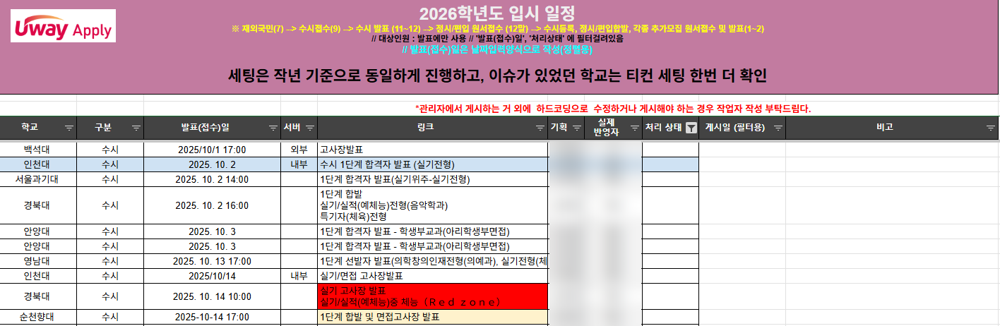

신청·승인처럼 상태가 바뀌는 기능을,
상태와 예외부터 설계하는 기획자
수험생이 쓰는 화면과 교직원이 쓰는 관리자 화면을 함께 기획하고 직접 운영했습니다. 대학(B)이 수험생(C)에게 제공하는 B2B2C 입시 서비스에서 쌓은 6가지 장면을 하이컨시 공고 순서대로 정리했습니다.
무장애 운영
운영 시간 단축
장애·배포 사고
대학 고객사
공고의 주요 업무마다
증명할 사례를 연결했습니다
공고의 주요 업무와 우대 사항을 기준으로 사례를 다시 배열했습니다. 실무에서 기획한 서비스는 모바일·PC 반응형 웹이고, 네이티브 앱 출시 경험은 없어 앱 기획은 05번 개인 프로젝트로 따로 준비했습니다.
신청이 몰려도
중복과 오류가 없어야 하는 시스템
KNU(경북대) 오픈캠퍼스는 오프라인 입시 행사 신청을 받을 시스템이 새로 필요했습니다. 신청이 몰릴 때 중복 신청과 데이터 오류를 막는 것이 핵심 과제였고, 신청·승인·거절 프로세스와 신청자·관리자 화면을 함께 설계했습니다.
- 신청·승인·거절 프로세스와 중복 검증 규칙 정의
- 신청자 화면·관리자 화면 설계, 서비스 정책 정의서 작성
- 오픈 후 행사 종료까지 직접 운영
예외까지 정책으로 정해
신청 정보 오류 0건
취소 가능 기간이 지나면 취소 버튼을 자동으로 비활성화하고, 기간 외 요청은 관리자가 처리하도록 정리했습니다. 관리자 화면에는 지망별 엑셀 추출과 권한별 개인정보 마스킹을 넣었습니다.
게시판 글로는
처리 상태를 알 수 없었던 요청
고객사의 업무 요청과 피드백이 게시판 글로만 쌓여 처리 상태와 우선순위를 파악할 수 없었습니다. 그래서 요청을 5개 상태와 4단계 우선순위로 정의하고, 이를 한 화면에서 보는 대시보드를 메인으로 설계했습니다.
계정·권한·알림까지
정책정의서로 명세
장기 미접속 계정이 그대로 남아 개인정보 휴면·파기 기준이 없었습니다. 관련 법령을 직접 확인해 휴면·파기 절차를 제안하고, 로그인·회원가입·휴면·알림·관리자 메뉴까지 정책정의서와 화면설계서를 작성했습니다.
- 보안: 로그인 5회 실패 시 계정 비활성화, 3개월 주기 비밀번호 변경 안내
- 권한: 관리자 승인제 가입, 조직(그룹) 트리 기반 권한 관리
- 알림: 수신 범위 선택(전체 / 내 게시물 / 미수신), 메일·문자 자동 발송
| 시점 | 처리 |
|---|---|
| 휴면 30일 전 | 휴면 전환 사전 고지 |
| 1년 미접속 | 휴면 전환 |
| 휴면 1년 후 | 논리 삭제 |
| 3년 후 | 물리 삭제 |
상태 하나 바뀔 때마다
슬라이드를 복제하던 설계서
로그인 5회 실패 잠금, 휴면계정, 승인대기, 비밀번호 변경 안내처럼 예외 상태가 늘어날수록 같은 화면을 슬라이드로 계속 복제해야 했고, 결과물은 클릭해볼 수 없는 정적 이미지였습니다.
- 상태 변화마다 슬라이드 복제
- 클릭 불가한 정적 이미지로만 흐름 전달
상태가 많은 화면은, PPT 대신
클릭되는 프로토타입으로
전체 화면설계는 기존 방식으로 작성하고, 로그인·계정 상태처럼 예외가 많은 화면은 요구사항·정책·상태값·예외처리를 스크립트로 정리해 AI로 브라우저에서 바로 클릭해볼 수 있는 프로토타입을 만들었습니다. 재직 중 PMS 로그인·계정 화면에 적용한 방식입니다.
데모 아이디 locked · dormant · pending 으로 로그인해보세요.
배너 하나 바꾸는데
코드를 직접 손대야 함
순천향대학교 입학처는 배너 전용 관리 도구가 없어, 팝업 관리 시스템을 우회로 활용하고 있었습니다. 색상 하나 바꾸려 해도 HTML 태그를 직접 입력해야 했고, 등록 순서를 바꿀 방법도 미리보기도 없었습니다.
- 제목·색상 표현마다 HTML 태그 직접 입력
- 노출 순서 변경 기능 없음
- 등록 후에야 결과 확인(미리보기 없음)
운영 데이터를 근거로,
전용 CMS를 직접 제안
기존 도구를 우회 활용하며 쌓인 운영 비효율을 데이터로 근거를 만들어 클라이언트에게 컨설팅하고, 직접 AS-IS/TO-BE 비교표와 상세 화면설계를 작성해 개발 요청까지 진행했습니다.
운영 시간
75% 단축
컬러 에디터·순서 관리·실시간 미리보기를 갖춘 배너 전용 CMS로, 코드 없이도 운영이 가능한 구조를 만들었습니다.
90여 개 대학이
동시에 발표하는데 기준이 없음
대입 합격자 발표 시스템 운영 및 배포 최적화 · 2023.02 – 2025.10 · PL
대학마다 발표 일정이 제각각이라 트래픽 변동성과 장애 리스크가 컸고, 발표 유형이 표준화되지 않으면 데이터 노출 오류 위험도 있었습니다. 사용자 관점(GA4)과 서버 관점(T-con) 데이터를 각각 다른 도구로 봐야 해 통합 판단도 어려웠습니다.
- 90여 개 대학의 상이한 발표 일정 → 트래픽 변동성·장애 리스크
- 발표 유형 미표준화 시 데이터 노출 오류 위험
- 발표 피크 타임 서버 과부하·DB 교착(Lock) 우려
일정을 표준화하고,
이중 방어 체계를 설계
발표 전에는 운영 시트로 배포 리스크를 사전 차단하고, 발표 당일에는 사용자·서버 데이터를 하나의 타임라인에서 교차 판단하는 구조를 직접 설계했습니다.

긴급 요청이 오면
리스크부터 설명하고 조율
Red Zone과 겹치는 긴급 반영 요청이 들어오면, 거절하지 않되 왜 지금은 위험한지부터 투명하게 공유하고 대체 일정을 먼저 제시해 메일로 협의했습니다.
발표 당일에는
실시간 트래픽 모니터링
도메인별 접속 상태를 실시간으로 확인하며, GA4(유입)·T-con(서버 커넥션) 데이터를 하나의 타임라인에서 교차 확인해 80% 도달 시 선제 조치 3종을 실행했습니다.
- 정적 리소스 캐싱 강화
- 불필요한 스크립트 일시 차단
- DB 쿼리 모니터링 강화
입시 집중기간
배포 사고율 0%
표준화된 세팅과 이중 방어 체계로, 8월부터 익년 2월까지 이어지는 입시 집중기간 내내 서비스 가용성을 유지했습니다.
출결 체크 한 번이
차감과 알림까지 이어지게
입시컨설팅 학원이 상담 예약·출결·회차권 결제·수시 지원 관리를 한 곳에서 처리하고, 학생과 학부모는 앱으로 진행 상황을 확인하는 B2B2C 앱을 기획했습니다. 회차 차감을 출결 상태에 묶어 컨설턴트가 출결만 체크하면 차감과 알림이 따로 손대지 않아도 처리되게 했습니다.
출결·환불·푸시를
정책으로 먼저 정했습니다
출결 상태별 차감 규칙, 학원법 시행령 교습비 반환기준에 따른 환불 자동 계산, 끌 수 없는 거래성 알림과 끌 수 있는 알림을 나눈 푸시 정책을 정의했습니다. 같은 시간대 중복 예약은 01번처럼 선택 직후와 확정 시 두 번 검증합니다.
- 출결은 체크 후 24시간 안에만 수정, 수정자·시각·사유 이력 저장
- 밤 9시~아침 8시 리마인드는 아침 8시로 미룸
- 원서접수 대행은 범위에서 제외: 현황 기록·공유만
| 출결 상태 | 판정 기준 | 회차 차감 |
|---|---|---|
| 출석 | 시작 10분 이내 입실 | 1회 |
| 지각 | 10분 초과 입실 | 1회 |
| 무단 결석 | 취소 기한 후 미출석 | 1회 |
| 기한 내 취소 | 24시간 전까지 취소 | 없음 |
| 학원 사정 취소 | 컨설턴트 일정 변경 | 없음 · 우선 재예약 |
학부모 홈 맨 위에는
잔여 회차를 둡니다
가장 잦은 문의를 앱을 열자마자 해결하려는 배치입니다. 예약이 앱으로 넘어와야 출결·차감·알림이 자동으로 이어지기 때문에 앱 예약 비율을 핵심 지표로 정하고, 이벤트 9개로 지표를 모두 계산할 수 있게 설계했습니다.
| 지표 | 정의 | 목표(가정) |
|---|---|---|
| 앱 예약 비율 | 앱 예약 ÷ 전체 상담 예약 | 3개월 70% |
| 상담 노쇼율 | 미출석 ÷ 예약 | 출시 전 대비 절반 |
| 학부모 주간 활성률 | 주 1회 이상 접속 ÷ 연결 학부모 | 50% |
화면만 그리지 않고,
정책과 예외까지 문서에 담습니다
개발자가 구현하다 멈춰서 되묻지 않도록, 화면과 함께 상태 전이 · 검증 규칙 · 예외 처리를 정의합니다. 오른쪽은 실제 작성한 문서에서 발췌한 내용입니다.
로그인 5회 실패 시 계정 비활성화, 3개월 주기 비밀번호 변경 안내
학과 선택 직후 + 최종 신청 시 2회 검증, 기간 외 취소 버튼 자동 비활성화
실제로 작성한 산출물로
증명하는 문서 밀도
화면설계뿐 아니라 메뉴구조도(IA), 정책 문서까지 — 기획 단계별로 실제 작성한 문서의 구조와 밀도를 확인할 수 있습니다.
고객사 기밀 보호를 위해 세부 텍스트는 모자이크 처리했습니다.
합격 발표 화면 너머의 1년을
함께하는 서비스에서 일하고 싶습니다
합격자 발표를 운영하며 수험생의 1년이 결과로 확인되는 순간을 지켜봤습니다. 이제는 그 결과에 이르는 과정, 학생이 수업을 듣고 출결과 자습을 관리하고 학부모가 그 과정을 확인하는 일상을 더 낫게 만드는 서비스를 오래 키우고 싶습니다.